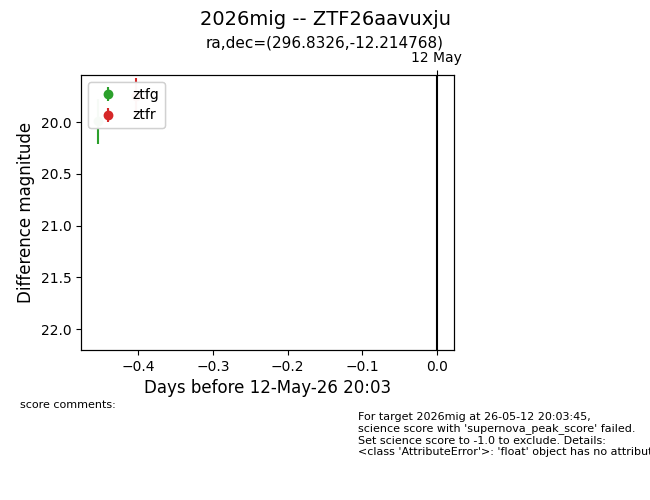
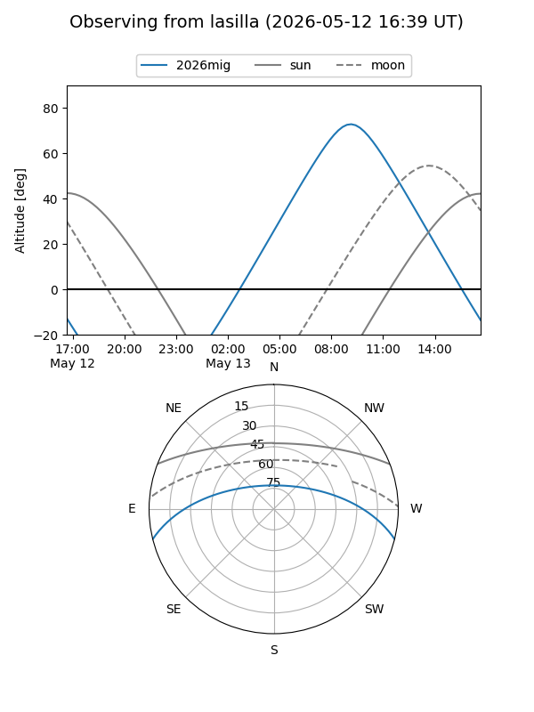
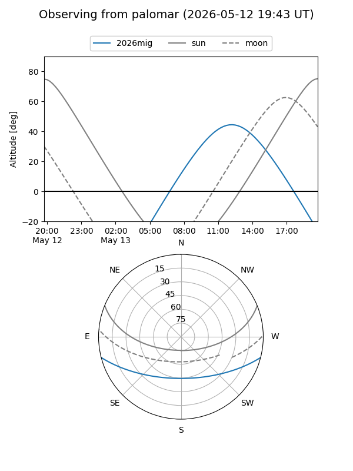
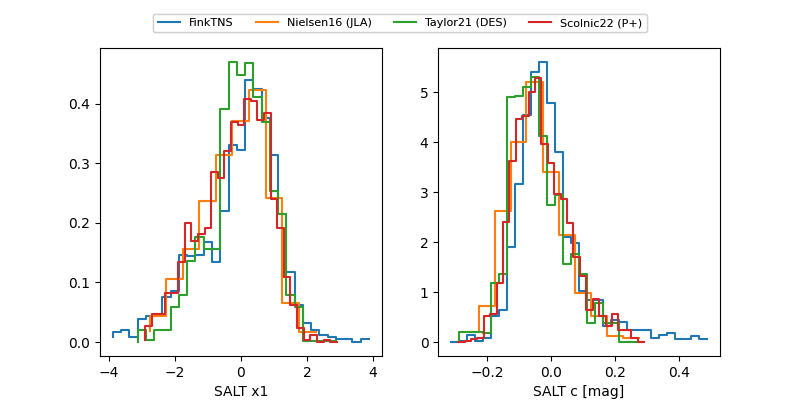

2026mig
Target 2026mig at 2026-05-12 20:05
Aliases and brokers:
FINK: link
Lasair: link
ALeRCE: link
TNS: link
YSE: link
alt names
ZTF26aavuxju (ztf,fink_ztf)
2026mig (tns,yse)
Coordinates:
equatorial (ra, dec) = 296.8326,-12.21477
equatorial (HMS+DMS) = 19:47:19.82,-12:12:53.17
galactic (l, b) = (28.0692,-17.84919)
Flags:
Photometry:
last ztfg=19.99, ztfr=19.75
1 ztfg, 1 ztfr detections
Lightcurve

Visibility


Additional plots
